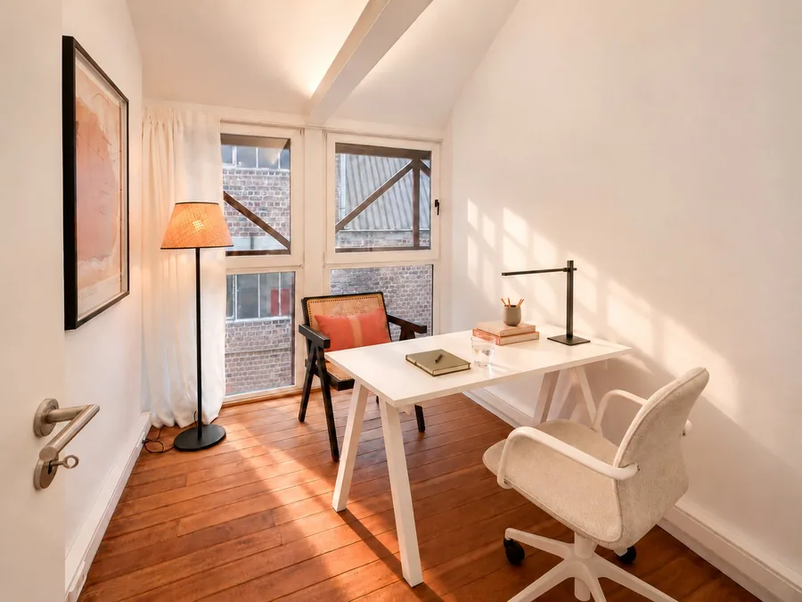
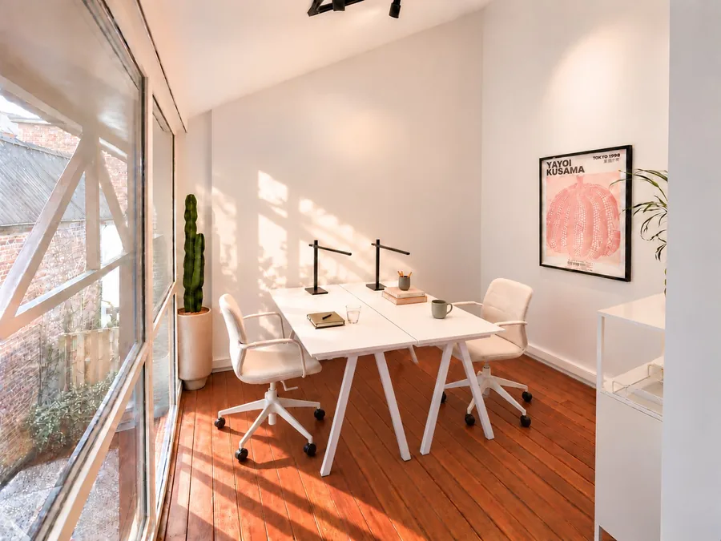
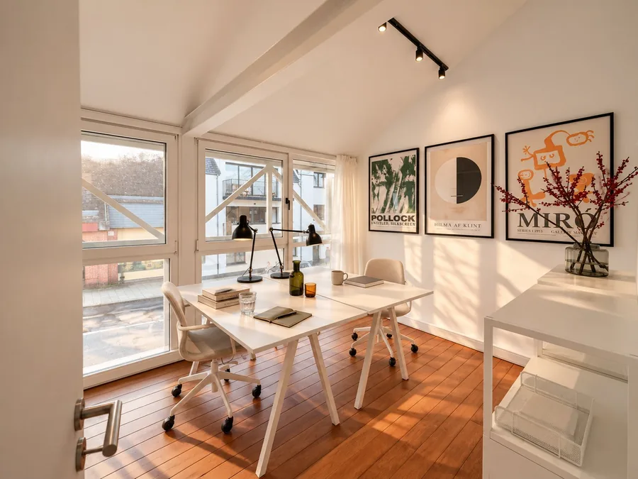
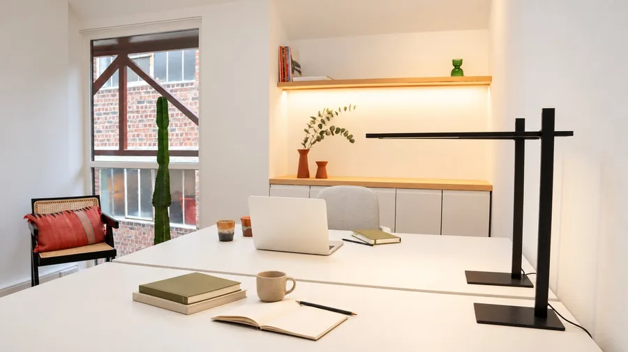
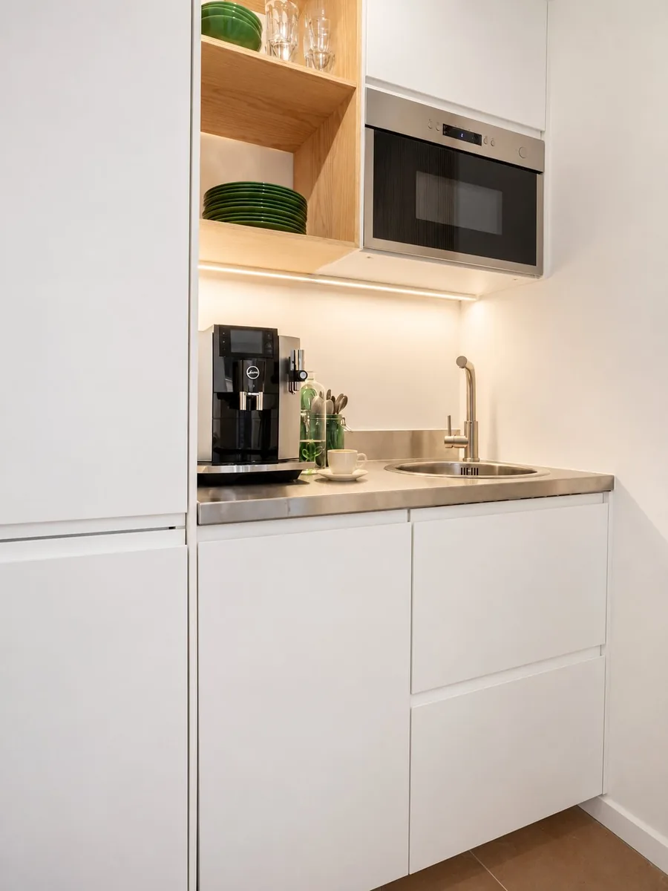
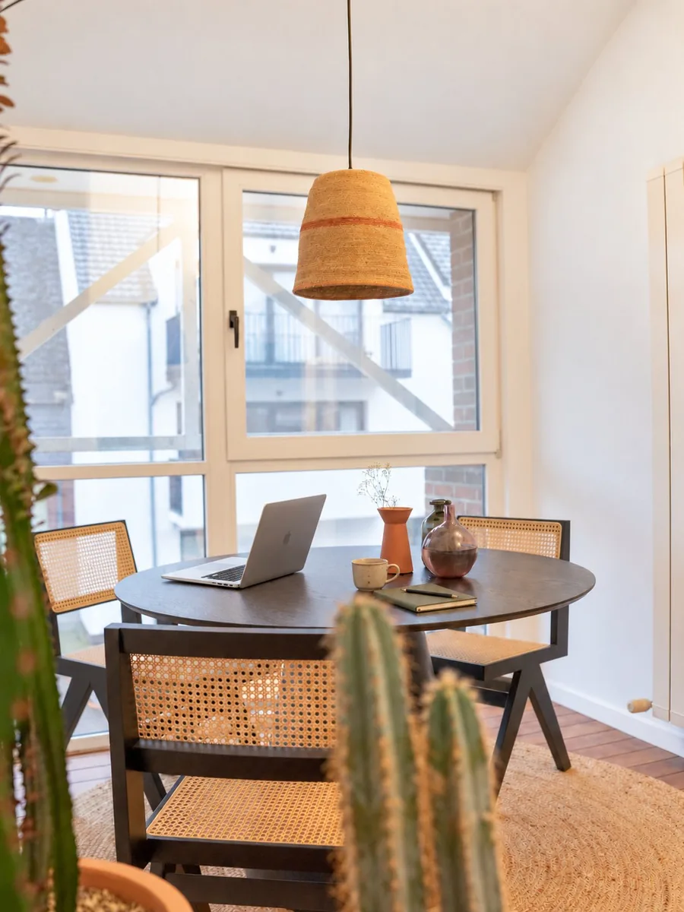
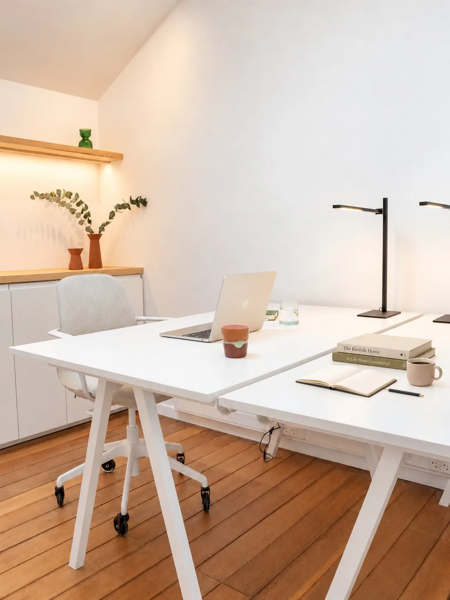

Travailler, c'est plus qu'aligner des heures derrière un écran. Cela peut être plus vivant, plus inspirant. Dans un bureau pour soi, tout seul, à deux ou à trois. Dans un lieu à partager, pour échanger des idées et apprendre les uns des autres.
The Post Office a été créé par des entrepreneurs créatifs qui ouvrent leur espace de travail à l'indépendant, la start-up et la petite entreprise.
Nous sommes aux Papeteries de Genval, à deux pas des commerces et des salles de sport, de la gare et du lac. Au milieu de la vie.

Bureau Klee

Bureau Kusama

Bureau Miro

Bureau Rothko

La cuisine

Le coin détente
Nos services
Accès sécurisé 24/7 avec badge
Salle de réunion équipée (6 pers.)
Possibilité de domiciliation de votre entreprise
Espaces décorés avec un souci du design et du confort
Catering sur demande
Invitation aux événements et networking
Service de nettoyage hebdomadaire
Deux cuisines entièrement équipées
Espaces extérieurs
Parking vélo protégé
Internet haut débit et prises RJ45
Café, thé
Imprimante
Vidéophonie personnalisée
Parking gratuit à proximité
Pass Papeteries : réductions dans les coffees, restaurants et salles de sport locaux
Les bureaux privatifs
à partir de 500 €/mois HTVA
L'Adresse
Votre bureau à l'année, à partir de 500 €/mois*
Vous cherchez un bureau privatif pour vous et votre équipe ? Ici, vous êtes à votre adresse : un bureau à vous. Nous proposons des espaces meublés et équipés selon les besoins de chacun. Nous sommes à votre disposition pour vous aider à trouver la meilleure solution. Passez nous voir, on en parle autour d'un café.
Accès 24h/24 et 7j/7
Salle de réunion (6h incluses)
Imprimante
Cuisine, café, thé
Invitation aux événements
Nettoyage hebdomadaire du bureau
Garantie de 2 mois
Connexion internet ultra haut débit
*Prix HTVA, toutes charges comprises.

Le coworking
250 €/mois HTVA
La solution flexible
250 €/mois*
Vous avez accès à un poste fixe dédié 24h/24 et 7j/7, installé dans un bureau partagé, équipé pour trois personnes maximum. Vous y choisissez votre place attitrée et vous l'aménagez comme bon vous semble.
Au 14 rue de Rixensart, dans les Papeteries de Genval (1332 Genval, Brabant wallon). Vous êtes à trois minutes à pied de la gare de Genval, à vingt minutes de Bruxelles-Schuman en train, et à deux pas du lac, des commerces et des salles de sport. Du parking gratuit est disponible à proximité.
Combien coûte un bureau ?
Un poste en coworking revient à 250 € par mois hors TVA, toutes charges comprises. Un bureau privatif démarre à 500 € par mois hors TVA, selon la taille et l'aménagement. Aucun frais caché : l'internet, l'électricité, le nettoyage, le café et l'accès à la salle de réunion sont inclus.
Quelle est la différence entre un bureau privatif et le coworking ?
Le bureau privatif, c'est un espace fermé qui n'appartient qu'à vous et à votre équipe, meublé et équipé selon vos besoins. Le coworking, c'est un poste de travail fixe et attitré dans un bureau partagé par trois personnes maximum : vous gardez votre place et vous l'aménagez comme vous voulez, sans avoir à louer un bureau entier.
Puis-je essayer avant de m'engager ?
Oui, nous offrons une journée d'essai gratuite. Vous venez travailler une journée complète, vous testez l'endroit et l'ambiance, et vous décidez ensuite. Il suffit de nous appeler ou de nous écrire pour convenir d'une date.
Peut-on accéder aux bureaux le soir et le week-end ?
Oui. Les bureaux privatifs et les postes en coworking sont accessibles 24h/24 et 7j/7, avec votre propre accès. Vous travaillez quand cela vous arrange, tôt le matin comme tard le soir.
Y a-t-il une salle de réunion ?
Oui, une salle de réunion équipée est à disposition, avec six heures incluses chaque mois dans votre formule. Au-delà, elle reste réservable. Une imprimante, une cuisine, le café et le thé sont également accessibles à tous.
À qui s'adressent ces bureaux ?
Aux indépendants, aux start-ups et aux petites entreprises qui cherchent un lieu de travail à taille humaine dans le Brabant wallon, entre Rixensart, La Hulpe, Waterloo et le sud de Bruxelles. The Post Office a été créé par des entrepreneurs créatifs qui ouvrent leur propre espace de travail.
Et si aucune formule ne correspond à mon besoin ?
On en parle. Une équipe qui grandit, un mi-temps, un bureau pour quelques mois : nous trouvons des arrangements sur mesure. Passez nous voir, on en discute autour d'un café.
Rejoignez-nous pour une journée d'essai gratuite !